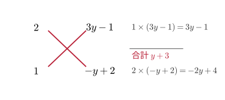

別冊章末問題の解答
1. \(2x^2+xy-3y^2+3x+7y-2\) を因数分解せよ。
\(y\) を数と同じように扱い、\(x^2\)、\(x\)、\(x\) を含まない項に分ける。
\[2x^2+xy-3y^2+3x+7y-2=2x^2+(y+3)x+(-3y^2+7y-2)\]確かめ：
\[(3y-1)(-y+2)=-3y^2+6y+y-2=-3y^2+7y-2\]
左の列は \(2,\ 1\)、右の列は \(3y-1,\ -y+2\)。たすきにかけて足すと、
\[2\cdot(-y+2)+(3y-1)=-2y+4+3y-1=y+3\]これは \(x\) の係数と一致するので、たすき掛けは成功。
（例題1の型）
【答案】
\[(2x+3y-1)(x-y+2)\]答
2. \(a(b+c)^2+b(c+a)^2+c(a+b)^2-4abc\) を因数分解せよ。
かっこをはずす：
\[a(b^2+2bc+c^2)+b(c^2+2ca+a^2)+c(a^2+2ab+b^2)-4abc\]\[=ab^2+2abc+ac^2+bc^2+2abc+a^2b+a^2c+2abc+b^2c-4abc\]\(abc\) の項は \(2abc+2abc+2abc-4abc=2abc\)。
\[=a^2b+a^2c+ab^2+ac^2+b^2c+bc^2+2abc\]\(a\) について整理する：
\[(b+c)a^2+(b^2+2bc+c^2)a+(b^2c+bc^2)=(b+c)a^2+(b+c)^2a+bc(b+c)\]\[=(b+c)\{a^2+(b+c)a+bc\}=(a+b)(b+c)(c+a)\]（例題2の型）
【答案】
\[(a+b)(b+c)(c+a)\]答
3. \((x+1)(x+3)(x+5)(x+7)+15\) を因数分解せよ。
\((x+1)(x+7)=x^2+8x+7\)、\((x+3)(x+5)=x^2+8x+15\)。\(x^2+8x=t\) とおくと
\[(t+7)(t+15)+15=t^2+22t+105+15=t^2+22t+120\]かけて120・足して22になる2数は \(10,\ 12\)。
\[t^2+22t+120=(t+10)(t+12)\]もどして
\[(x^2+8x+10)(x^2+8x+12)\]\(x^2+8x+12=(x+2)(x+6)\) なので
\[(x+2)(x+6)(x^2+8x+10)\]（例題3の型）
【答案】
\[(x+2)(x+6)(x^2+8x+10)\]答
4. \(x^4+4y^4\) を因数分解せよ。
\((x^2+2y^2)^2=x^4+4x^2y^2+4y^4\)。\(4x^2y^2\) を足して引く。
\[x^4+4y^4=(x^4+4x^2y^2+4y^4)-4x^2y^2=(x^2+2y^2)^2-(2xy)^2\]\[=(x^2+2y^2+2xy)(x^2+2y^2-2xy)=(x^2+2xy+2y^2)(x^2-2xy+2y^2)\]（例題4の型）
【答案】
\[(x^2+2xy+2y^2)(x^2-2xy+2y^2)\]答
5. \(xy-4x-3y=0\) をみたす自然数 \(x,\ y\) の組 \((x,\ y)\) をすべて求めよ。
\((x-3)(y-4)=xy-4x-3y+12\) より \((x-3)(y-4)=12\)。\(x-3\geqq-2\)、\(y-4\geqq-3\)。
| \(x-3\) | \(y-4\) | \((x,y)\) | 判定 |
|---|---|---|---|
| 1 | 12 | (4, 16) | ○ |
| 2 | 6 | (5, 10) | ○ |
| 3 | 4 | (6, 8) | ○ |
| 4 | 3 | (7, 7) | ○ |
| 6 | 2 | (9, 6) | ○ |
| 12 | 1 | (15, 5) | ○ |
| −1 | −12 | (2, −8) | × |
| −2 | −6 | (1, −2) | × |
| −3 | −4 | (0, 0) | × |
| −4 | −3 | (−1, 1) | × |
| −6 | −2 | (−3, 2) | × |
| −12 | −1 | (−9, 3) | × |
（例題5の型）
【答案】
\[(4,16),\ (5,10),\ (6,8),\ (7,7),\ (9,6),\ (15,5)\]答
6. \(4x^2-7xy-2y^2-11x-5y-3\) を因数分解せよ。
\(y\) を数と同じように扱い、\(x^2\)、\(x\)、\(x\) を含まない項に分ける。
\[4x^2-7xy-2y^2-11x-5y-3=4x^2+(-7y-11)x+(-2y^2-5y-3)\]確かめ：
\[(y+1)(-2y-3)=-2y^2-3y-2y-3=-2y^2-5y-3\]
左の列は \(4,\ 1\)、右の列は \(y+1,\ -2y-3\)。たすきにかけて足すと、
\[4\cdot(-2y-3)+(y+1)=-8y-12+y+1=-7y-11\]これは \(x\) の係数と一致するので、たすき掛けは成功。
（例題1の型）
【答案】
\[(4x+y+1)(x-2y-3)\]答
7. \(x^{3} + 2 x^{2} - 11 x - 12\) を因数分解せよ。
因数定理で1つ見つける
定数項の約数から候補を探す。\(x=3\) を代入すると
\[P(3)=3^{3}+2\cdot 3^{2}-11\cdot 3-12=0\]0 なので \(x-3\) を因数にもつ。
組立除法で割る
\(x^{3} + 2 x^{2} - 11 x - 12\) を \(x - 3\) でわる。係数を並べ、左に \(3\) をおく。
| \(1\) | \(2\) | \(-11\) | \(-12\) | |
|---|---|---|---|---|
| \(3\) を下ろしてかける | \(3\) | \(15\) | \(12\) | |
| たして下へ | \(1\) | \(5\) | \(4\) | \(0\) |
左から順に「たす → \(3\) をかける → 次の列へ」をくり返す。いちばん右（余り）が \(0\)、残りが商の係数。
\[x^{3} + 2 x^{2} - 11 x - 12=(x - 3)(x^{2} + 5 x + 4)\]商をさらに因数分解
\[x^{2} + 5 x + 4=\left(x + 1\right) \left(x + 4\right)\]\[x^{3} + 2 x^{2} - 11 x - 12=\left(x - 3\right) \left(x + 1\right) \left(x + 4\right)\]（例題6の型）
【答案】
\[\left(x - 3\right) \left(x + 1\right) \left(x + 4\right)\]答
8. \(x^{4} - 4 x^{2} y^{2} + 36 y^{4}\) を因数分解せよ。
平方の形をつくる
\(y^4\) の項は \((6 y^2)^2\)、\(x^4=(x^2)^2\)。中央の項が \(2\cdot x^2\cdot 6y^2=12x^2y^2\) になるように足し引きする。
\[(x^2+6y^2)^2=x^4+12x^2y^2+36y^4\]与式の \(x^2y^2\) の項は \(-4x^2y^2=12x^2y^2-16x^2y^2\) と書けるので
\[x^{4} - 4 x^{2} y^{2} + 36 y^{4}=(x^2+6y^2)^2-16x^2y^2\]平方の差にする
\[=(x^2+6y^2)^2-(4xy)^2\]公式 \(A^2-B^2\)
\[=(x^2+4xy+6y^2)(x^2-4xy+6y^2)\]（例題7の型）
【答案】
\[(x^2+4xy+6y^2)(x^2-4xy+6y^2)\]答
9. \(x^6-46656\) を因数分解せよ。
\(A^2-B^2\) を使う
\(x^6=(x^3)^2\)、\(6^6=(6^3)^2\)。
\[x^6-46656=(x^3-216)(x^3+216)\]3乗の公式
\(A^3-B^3=(A-B)(A^2+AB+B^2)\)、\(A^3+B^3=(A+B)(A^2-AB+B^2)\) を使う（\(A=x,\ B=6\)）。
\[x^3-216=(x-6)(x^2+6x+36),\qquad x^3+216=(x+6)(x^2-6x+36)\]まとめる
\[x^6-46656=(x-6)(x+6)(x^2+6x+36)(x^2-6x+36)\]（例題8の型）
【答案】
\[(x-6)(x+6)(x^2+6x+36)(x^2-6x+36)\]答
10. \((x^{2} + 4 x)^2+1(x^{2} + 4 x)-12\) を因数分解せよ。
かたまりで置き換える
\(X=x^{2} + 4 x\) とおく。
\[(x^{2} + 4 x)^2+1(x^{2} + 4 x)-12=X^2+X-12\]\(X\) で因数分解
\[X^2+X-12=(X+4)(X-3)\]\(X\) をもどし、さらに分解
\[(x^{2} + 4 x + 4)(x^{2} + 4 x - 3)=\left(x + 2\right)^{2} \left(x^{2} + 4 x - 3\right)\]（例題9の型）
【答案】
\[\left(x + 2\right)^{2} \left(x^{2} + 4 x - 3\right)\]答
11. \(15^4+4\) を素因数分解せよ。
式を \(n\) で表す
\(n^4+4=(n^2)^2+4\)。平方をつくって差にする。
\[n^4+4=(n^2+2)^2-4n^2=(n^2+2n+2)(n^2-2n+2)\]\(n=15\) を代入
\[15^4+4=(225+30+2)(225-30+2)=257\times197\]さらに素因数分解
\(257=257\)、\(197=197\)。
\[50629=197\times257\]（例題10の型）
【答案】
\[50629=197\times257\]答